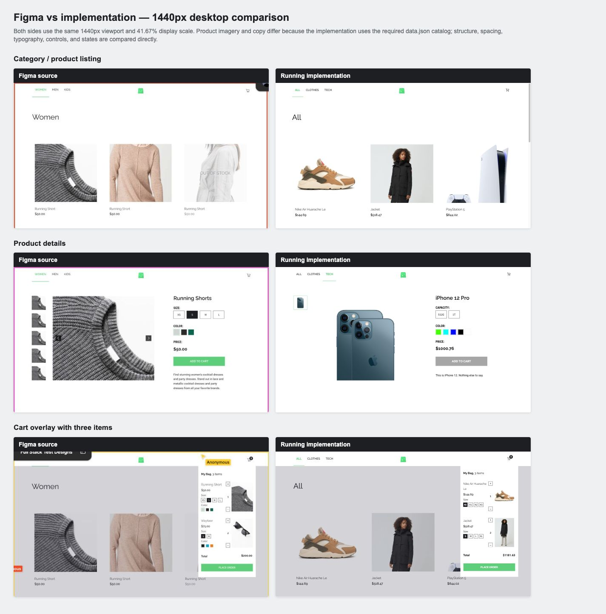
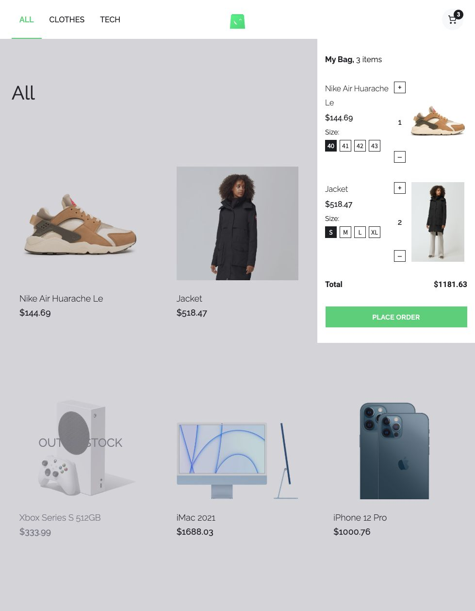
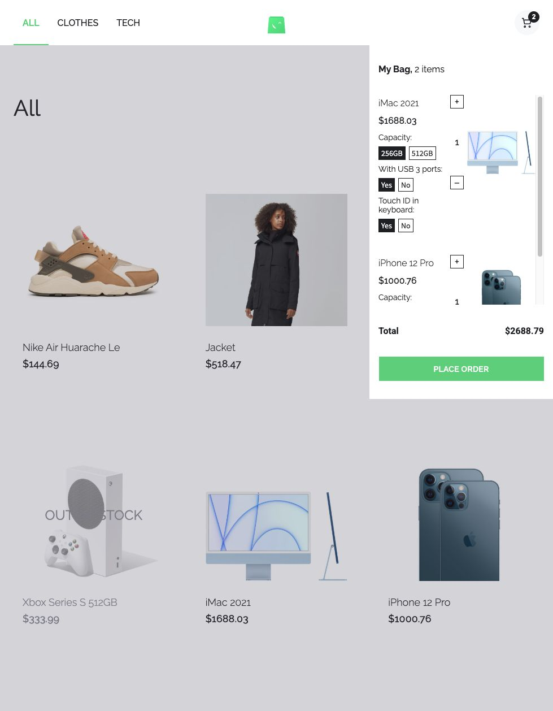

Scandiweb Figma vs implementation
The final evidence below renders both sides at the same 1440px desktop viewport and 41.67% display scale. Product imagery and copy differ because the implementation uses the required data.json catalog.

Backend-data cart stress check
The normal two-line state keeps the Figma row geometry. The supplied iMac state expands for its third attribute group and scrolls vertically without overlap or horizontal clipping.

